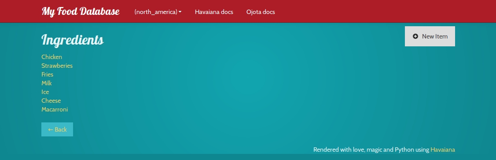
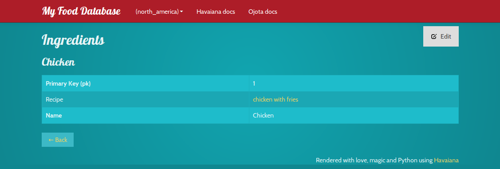
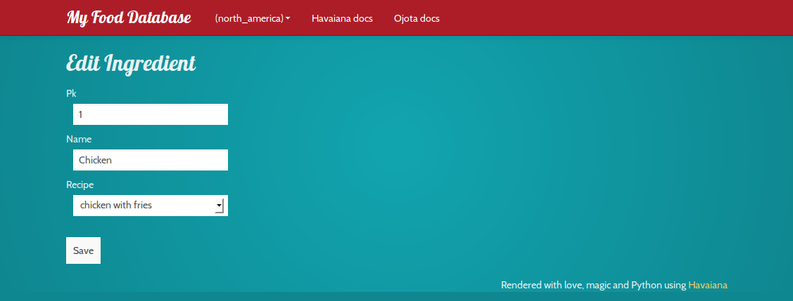
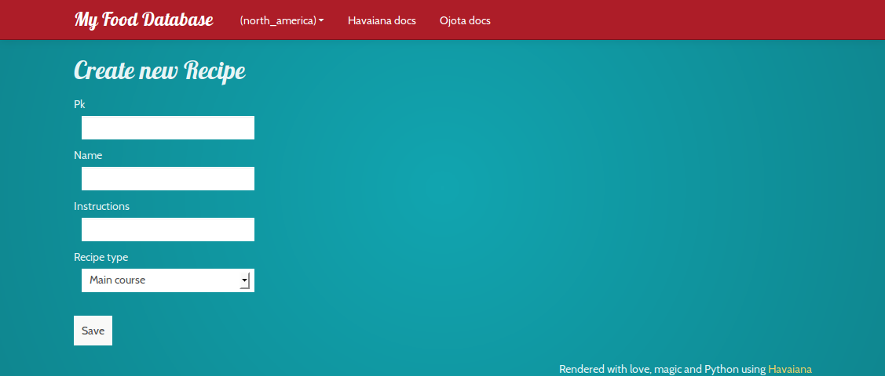
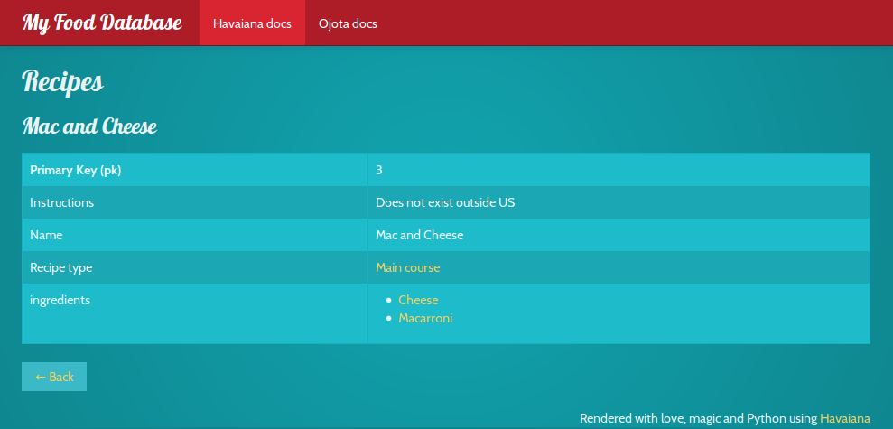
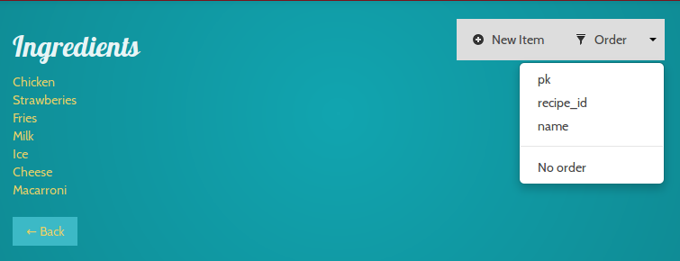
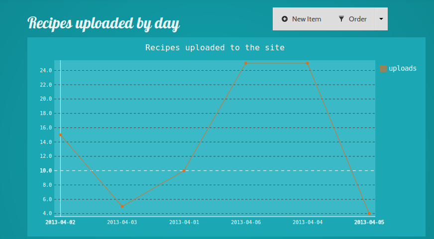

Welcome to Havaiana’s documentation!¶
Havaiana is a dynamic web interface for Ojota (http://ojota.rtfd.org).
Havaiana is Free Software! you can check the code at http://bitbucket.org/felipelerena/havaiana
How to use it¶
Hello World¶
import ojota.examples.examples as pkg
from havaiana import Site
site = Site(pkg)
site.serve()
Custom rendering for a field¶
import food_data
from havaiana import Site
def ingredients_list(field, item, backwards):
required = field in item.required_fields
ingredients = getattr(item, field)
items = []
for element in ingredients:
item = '<li><a href="/Ingredients/%s">%s</a></li>' % (element.primary_key,
element)
items.append(item)
value = "<ul>%s</ul>" % "".join(items)
related = False
return (field, value, required, related)
if __name__ == "__main__":
renderers = [('Recipe', 'ingredients', ingredients_list)]
site = Site(food_data, "My Food Database", renderers)
site.serve()
Adding a chart on a view¶
import food_data
from havaiana import Site
from havaiana.charts import LineChart
class RainChartView(LineChart):
def __init__(self):
LineChart.__init__(self, "Recipes uploaded to the site",
"uploads", 800, 400)
def get_data(self, data):
keys = []
points = []
for element in data:
keys.append(element.date)
points.append({"value": int(element.number),
"xlink": "/Recipes uploaded by day/%s" % element.date})
return keys, points
if __name__ == "__main__":
renderers = [
('RecipesByDay', "__index_chart", RainChartView)
]
site = Site(food_data, "My Food Database", renderers)
site.serve()
Screenshots¶

All the data sources in the package.

The items in the data source.

An item detail.

Edit an existing element.

Create new element.

A view with custom rendering.

You can sort the data.

Render charts with your data
Installation
sudo easy_install Havaiana
With pip
sudo pip install Havaiana
From source
hg clone ssh://hg@bitbucket.org/felipelerena/Havaiana
sudo python setup.py install
Table of contents¶
Dependencies¶
- flask
- Ojota
- wtforms
- pygal